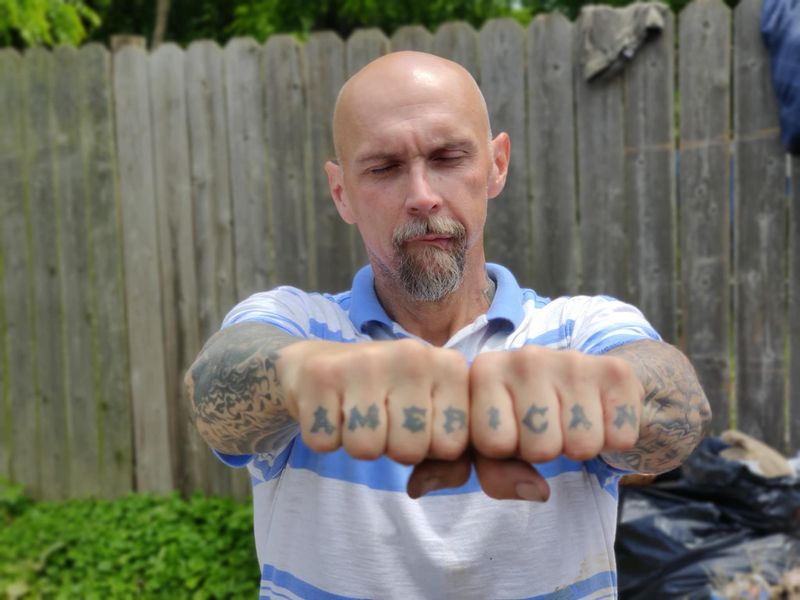

Mobile uploads
This is Tim.
He was born into racism. He used to be a Skinhead. But he left them in prison. Not because of the racism. He felt that they had lost sight of their values. They were just becoming another gang. In effect, they weren’t racist enough.
He knows every racist joke in the book. Some are pretty funny. Most are pretty cringy. I’ve learned from him that it isn’t Black people that are the major problem. It’s the Mexicans. I haven’t quite fully learned why Mexicans are the problem. But I’ll find out one day.
Of all my homeless friends, Tim is my favorite to spend time with. He didn’t waste his 19 years in prison. He read. He is super knowledgeable on philosophy, psychology and religion. He’s truly educated on these topics. We have the most interesting conversations. Most of them have nothing to do with racism. Most are about human nature.
Yesterday he came to me to tell me our friend Kristyn had a terrible accident. She was in her tent and would not go to the hospital.
So Tim got me and Kristyn’s Uncle Rick together to go down there and try to get her to the hospital. He knew Rick was the only person who could get her to go.
Sure enough, she refused to go. But Rick knew exactly what to say and do.
She needed 2 people to hold her up as we walked her to my truck.
She was starving. But her mouth was so badly damaged we didn’t know what she could eat. We settled on a Frosty.
We got her to the hospital. Uncle Rick stayed with her.
“Do the right thing,” is an incredibly important mantra in the homeless community. All of society is conditioned to think it’s acceptable to just allow human beings to suffer abandoned on our streets. It’s usually a homeless person that has to come to me and snap me out of that brainwashing so that I wake up and do what needs to be done.
If it wasn’t for Tim I’m quite sure Kristyn would be dying in that tent with no one coming to help her.
Thank you Tim.